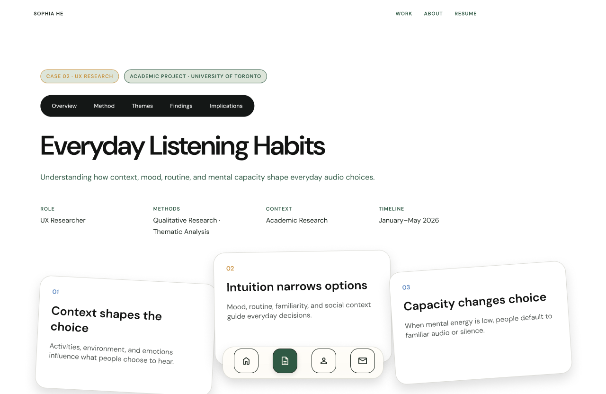

CASE 02 · UX RESEARCH
Everyday Listening Habits
Using thematic analysis to understand how context, mood, and mental capacity shape audio choices.

Overview
This research looks at how everyday context, mood, and a person's capacity can shape audio choices. It brings together observations and themes to understand why listening preferences change across situations.
The full case study can be expanded with your original research questions, process, key findings, design decisions, and final outcomes. This first website version keeps the visual structure in place while leaving room for those details.
← Back to selected projects